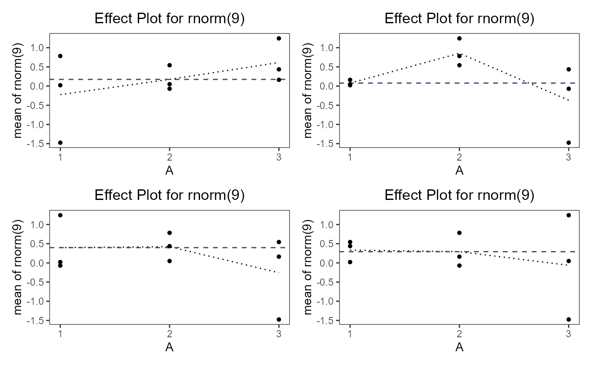

An R6 class representing a Taguchi experimental design.
Public fields
nameA character string specifying the name of the design. Default is
NULL.factorsA list of factors included in the Taguchi design. Each factor is typically an instance of the
taguchiFactorclass.designA `data.frame` representing the design matrix of the experiment. This includes the levels of each factor for every run of the experiment. Default is an empty
data.frame.designTypeA character string specifying the type of Taguchi design used. Default is
NULL.replicA `data.frame` containing the replication information for the design. Default is an empty
data.frame.responseA `data.frame` storing the response values collected from the experiment. Default is an empty
data.frame.TypeA `data.frame` specifying the type of responses or factors involved in the design. Default is an empty
data.frame.blockA `data.frame` indicating any blocking factors used in the design. Default is an empty
data.frame.runOrderA `data.frame` detailing the order in which the experimental runs were conducted. Default is an empty
data.frame.standardOrderA `data.frame` detailing the standard order of the experimental runs. Default is an empty
data.frame.desireValA list storing desired values for responses in the experiment. Default is an empty list.
desirabilityA list storing desirability functions used to evaluate the outcomes of the experiment. Default is an empty list.
fitsA `data.frame` containing model fits or other statistical summaries from the analysis of the experimental data. Default is an empty
data.frame.
Methods
Method units()
Get and set the units for an object of class taguchiDesign.
Method names()
Get and set the names in an object of class taguchiDesign.
Method as.data.frame()
Return a data frame with the information of the object taguchiDesign.c.
Method .nfp()
Prints a summary of the factors attributes including their low, high, name, unit, and type.
Method effectPlot()
Plots the effects of factors on the response variables.
Usage
taguchiDesign.c$effectPlot(
factors,
fun = mean,
response = NULL,
points = FALSE,
l.col,
p.col,
ld.col,
lty,
xlab,
ylab,
main,
ylim,
pch
)Arguments
factorsFactors to be plotted.
funFunction applied to the response variables (e.g., mean).
responseOptional; specifies which response variables to plot.
pointsLogical; if TRUE, plots data points.
l.colA color for the lines.
p.colA color for the points.
ld.colA color for the dashed line.
ltyLine type for plotting.
xlabLabel for the x-axis.
ylabLabel for the y-axis.
mainMain title for the plot.
ylimLimits for the y-axis.
pchThe symbol for plotting points.
Examples
tdo = taguchiDesign("L9_3")
tdo$.response(rnorm(9))
tdo$effectPlot(points = TRUE, pch = 16, lty = 3)Method identity()
Calculates the alias table for a fractional factorial design and prints an easy to read summary of the defining relations such as 'I = ABCD' for a standard 2^(4-1) factorial design.
Examples
## ------------------------------------------------
## Method `taguchiDesign.c$effectPlot`
## ------------------------------------------------
tdo = taguchiDesign("L9_3")
tdo$.response(rnorm(9))
tdo$effectPlot(points = TRUE, pch = 16, lty = 3)
